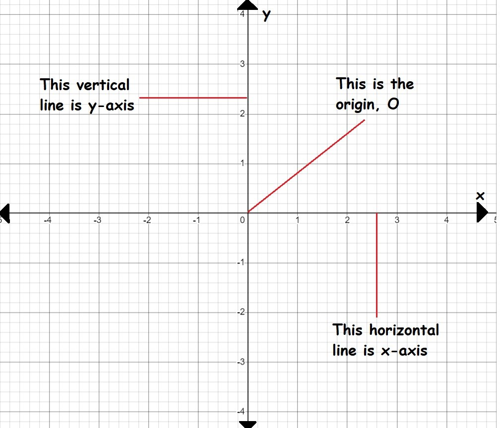
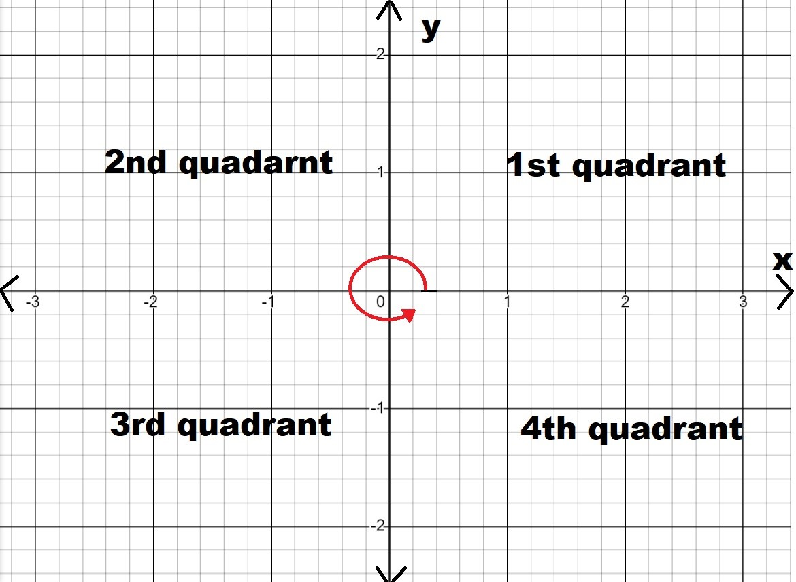

Cartesian Plane
Cartesian plane
The Cartesian plane is a fundamental concept in coordinate geometry that helps in locating points in a two-dimensional space. 
- There is a centre point known as the origin (O).
- Two axes are drawn through the origin to make the Cartesian plane. These axes are called the x-axis (horizontal) and the y-axis (vertical).
- Look at the cartesian plane shown above, the x-axis has negative values to the left of O, and the y-axis has negative values below O.
The x-axis and y-axis divide the Cartesian plane into four sections known as quadrants. Quadrants are labelled in an anti-clockwise direction shown below.
The Cartesian plane is divided into four sections called quadrants:
- Quadrant Ist: Top right section where both x and y are positive.
- Quadrant 2nd: Top left section where x is negative and y is positive.
- Quadrant 3rd: Bottom left section where both x and y are negative.
- Quadrant 4th: Bottom right section where x is positive and y is negative.
Plotting Points on Cartesian Plane
To plot a point, you need a pair of numbers called coordinates. Coordinates are written as (x, y).
x-coordinate: Tells how far to move left or right from the origin.
- Positive x means move right.
- Negative x means move left.
y-coordinate: Tells how far to move up or down from the origin.
- Positive y means move up.
- Negative y means move down.
For example, if you have the point (1, 2):
- Start at the origin (0, 0).
- Move 1 unit to the right (since x = 1).
- Move 2 units up (since y = 2).
- Mark the point.